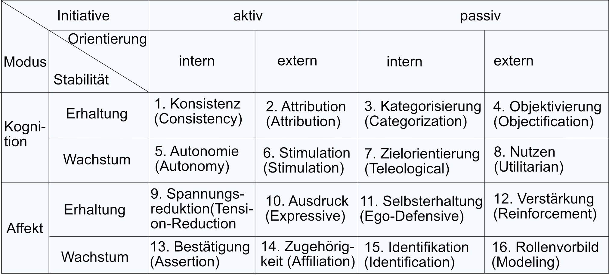

Bedürfnisse, Motive, Nutzen und Gratifikationen
Bedürfnisse und deren Einfluss auf die Mediennutzung
Bedürfnisse, Motive, Nutzen und Gratifikationen
Bedürfnisse motivieren unsere Mediennutzung und können auch in Verbindung mit anderen Bedürfnissen stehen. Hierbei spricht man dann von mehrstufigen Bedürfnisketten. Dabei ist es oft nicht auszumachen, welches Bedürfnis und damit auch welche Bedürfnisstufe letztendlich tatsächlich zur Mediennutzung führt. Bedürfnisse werden in langfristige, mittelfristige und situative Bedürfnisse differenziert. Langfristige Bedürfnisse, auch Persönlichkeitseigenschaften genannt, sind Bedürfnisse, die derart grundlegend für die menschliche Persönlichkeit sind, da sie entweder angeboren sind oder im Laufe der Sozialisierung erlernt werden. Ein Beispiel hierfür ist das Kognitionsbedürfnis, welches den generellen Drang einer Person nach Neuem und kognitiver Anregung umfasst. Bei Bedürfnissen, welche in bestimmten Lebensphasen auftauchen, spricht man von mittelfristigen Bedürfnissen. Hierzu zählt beispielsweise eine zeitlich beschränktes Hobby oder Themeninteresse. Situative Bedürfnisse beschreiben Bedürfnisse, die sich jederzeit, auch während der Mediennutzung, ändern können.
Begriffsverwirrung
Einer Systematisierung von Katz et al. Zufolge befasst sich der Uses-and-Gratifications-Ansatz mit den sozialen und psychologischen Ursprüngen von Bedürfnissen, die Erwartungen gegenüber Massenmedien und anderen Quellen (der Bedürfnisbefriedigung) hervorrufen, die in unterschiedlichen Mustern der Mediennutzung oder anderen Aktivitäten resultieren. Diese wiederum führen entweder zur Bedürfnisbefriedigung oder zu anderen, meist unbeabsichtigten Konsequenzen. Damit wird eine Unterscheidung in Bedürfnisse und deren psychischen bzw. sozialen Ursprünge eingeführt. Allerdings werde diese Ursachen nicht weiter beschrieben. Ein anderer Erklärungsansatz des Uses-and-Gratifications-Ansatzes ist der von McLeod und Becker. Sie unterscheiden in ihrem transaktionalen Modell zwischen grundlegenden Bedürfnissen und Motiven. Aus ihrer Sicht liegen grundlegende Bedürfnisse im Bereich der Psychologie und Physiologie und können schlecht durch Selbstauskunft gemessen werden. Motive hingegen sind etwas bewusster und daher leichter zu messen. Des Weiteren sind sie stärker auf ein mögliches Lösungsverhalten ausgerichtet. Eine solche methodisch orientierte Unterscheidung ist jedoch nur anwendbar, wenn man unterstellt, dass Bedürfnisse genau das sind, was Menschen im Interview angeben. Damit setzt man das Konstrukt mit seinem Indikator gleich und ignoriert die bereits angesprochenen Operationalisierungsprobleme wie soziale Erwünschtheit, mangelnde Selbstreflexion oder ex-post-Rationalisierung. Letztendlich entsteht der Eindruck, dass die in der Uses-and-Gratifications-Literatur häufig vertretene Trennung in grundlegende bzw. psychische/soziale Bedürfnisse einerseits und Mediennutzungsmotive andererseits auf den ersten Blick zwar recht plausibel erscheint, definitorisch jedoch kaum leistbar und deshalb wenig brauchbar ist. Abschließend muss festgehalten werden, dass sich generell bis heute keine einheitliche Terminologie herausgebildet hat. Auch die Begriffe ‚Gratifikation’ und ‚Nutzen’, die ja dem Uses-and-Gratifications-Ansatz zu seinem Namen verholfen haben, werden meist synonym verwendet. Während Gratifikationen auf allgemeine, wenig zielgerichtete Bedürfnisse wie beispielsweise Unterhaltung verweisen, bezieht sich Nutzen auf instrumentelle, meist informationsbezogene Bedürfnisse wie beispielsweise das Finden einer Telefonnummer. Und dennoch werden sämtliche Begriffe üblicherweise synonym benutzt.
Maslows Bedürfnishierarchie
Maslow verortet die menschlichen Bedürfnisse in einer unidimensionalen Pyramide. Das Modell integriert das gesamte Spektrum menschlicher Motivationen, das vom angeborenen Instinkt bzw. Primärtrieb über Sekundärtriebe, die durch Konditionierung erlernt werden, über Wünsche, Intentionen und Zwecke reicht und bei politischen oder kulturellen Werten endet. Das Fundament bilden die biologischen Bedürfnisse und deren Einfluss auf die Mediennutzung. Wenn diese erfüllt sind, kann sich der Mensch seinen Sicherheitsbedürfnissen zuwenden. Hierbei ist wichtig zu erwähnen, dass sich diese Bedürfnisse am wenigsten mit Hilfe von Medien befriedigen lassen. Dennoch gibt es Studien, dass beispielsweise das Lesen eines Romans der Behaglichkeit und Ruhe dient. Die sozialen Bindungsbedürfnisse beschäftigen sich mit dem Wunsch geliebt zu werden, Freunde zu haben oder nicht allein zu sein. Wird im Freundeskreis zum Beispiel eine bestimmte Fernsehserie oft thematisiert, wird man sich diese Serie mit großer Wahrscheinlichkeit auch ansehen, um Anschluss zu finden und ein Zugehörigkeitsgefühl zu erlangen. Dies nennt man fachsprachlich auch Anschlusskommunikation. Das Selbstwertbedürfnis bezieht sich darauf, als Individuum etwas ‚wert zu sein‘, eine eigenständige Identität zu entwickeln, um von anderen respektiert zu werden. Hier lässt sich auch das Streben nach sozialem Vergleich einordnen. Dabei will man abschätzen können, ob man einem Vergleich standhalten kann oder sogar noch ‚besser‘ ist. Durch Medieninhalte versucht man eine Erhaltung oder gar Erhöhung seines Selbstwertes zu erreichen. Kognitive Bedürfnisse beschreiben das Streben nach Wissen oder die Suche nach neuen Reizen. Ein Großteil der Nutzung von Nachrichten und anderer medialer Informationsangebote ist den kognitiven Bedürfnissen geschuldet, denn die menschliche Neugier ist eine wesentliche Antriebskraft bei der Informationssuche. Das Streben nach Wahrem und schönem können durch die Mediennutzung befriedigt werden. Man spricht dann von ästhetischen Bedürfnissen. Als Beispiele gelten hierbei ansprechend gestaltete Bildbände oder die Belleristik (die „schöne Literatur“). Das heißt Konzert-, Theater- oder Tanzübertragungen, aber auch Fußballübertragungen können zur Befriedigung ästhetischer Bedürfnisse angesehen werden. Abschließend steht erst die Selbstverwirklichung und zu guter Letzt die Transzendenz. Sie sind die beiden höchsten Bedürfnisstufen und entziehen sich aufgrund ihrer beinahe esoterischen Orientierung weitestgehend einer empirischen Überprüfbarkeit. Aufgrund dessen werden sie in der empirisch-experimentellen Psychologie meist abgelehnt, kommen jedoch in der therapeutischen Psychologie und Pädagogik zum Einsatz. Abschließend muss festgehalten werden, dass die einzelnen Stufen wenig trennscharf sind und die Differenzierung deshalb für empirische Forschungszwecke nur bedingt brauchbar ist. Dennoch liegt das Elegante an Maslows Bedürfnishierarchie in ihrer theoretischen Integrations- bzw. Anschlussfähigkeit, denn sie umfasst menschliche Bedürfnisse aus den unterschiedlichsten Bereichen, die ansonsten meist getrennt behandelt werden.
McGuires Systematisierung psychologischer Motive
McGuire definiert vier Dimensionen zur Unterscheidung von insgesamt 16 Grundbedürfnissen („basic, pervasive human needs“). Dimension 1 (Modus) trennt kognitive und affektive Bedürfnisse. Kognitive Motive beziehen sich in dem Fall auf die menschliche Informationsübertragung und auf das Erreichen von bestimmten ideellen Bewusstseins-Zuständen. Affektive Motive hingegen betonen Gefühle und das Streben nach bestimmten emotionalen Zuständen. Die zweite Dimension (Stabilität) greift Maslows Wachstumsbedürfnis auf und setzt dem entgegen ein Erhaltungsbedürfnis. Demzufolge versuchen Menschen zunächst permanent einen als angenehm empfundenen Gleichgewichtszustand (Equilibrium) zu erreichen. Sofern dies gelingt, wird sich auf Motive konzentriert, die einer Verbesserung der Lebenssituation, über den bisherigen Gleichgewichtszustand hinaus, entsprechen (Wachstum). Dimension 3 (Initiative) bezieht sich auf den Ursprung oder Anstoß eines Motivs. Hierbei können Bedürfnisse entweder vom Individuum aktiv gesucht werden, oder aber von der Umwelt an das Individuum herangetragen und von diesem passiv reagierend übernommen werden. Die vierte und damit letzte Dimension (Orientierung) steht für das Bezugsobjekt, auf das sich Bedürfnisse beziehen können. Menschen wollen entweder ‚in sich und für sich‘ zufrieden, glücklich, entspannt, wissend, verstehen, etc. sein, oder aber in Beziehung zu ihrer sozialen Umwelt. Wichtig ist zu sagen, dass McGuires Differenzierung durchaus Schwächen aufweist. Denn die vier Dimensionen werden wenig eindeutig beschrieben und auch die Zuordnung der 16 Grundbedürfnisse zu diesen Dimensionen erscheint häufig konstruiert und willkürlich.
Paradigmen menschlicher Bedürfnisse
Die obige Tabelle zeigt alle Dimensionen der Systematisierung psychologischer Mediennutzungsmotive nach McGuire und die 16 Grundbedürfnisse, die sich daraus ableiten lassen.